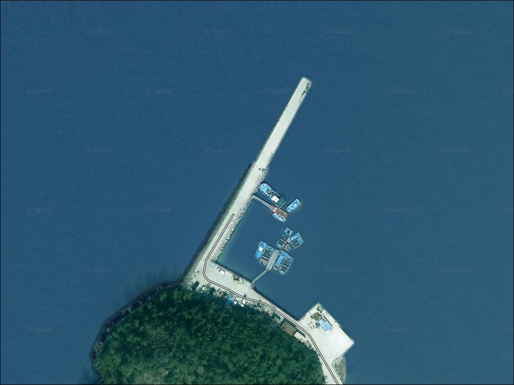
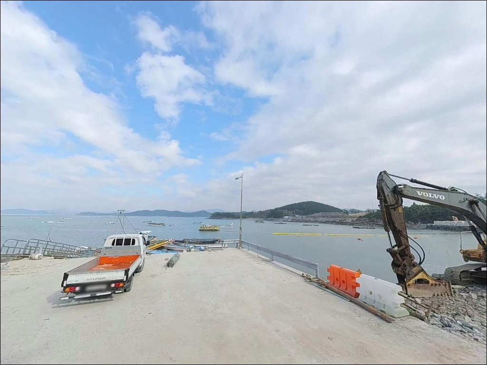
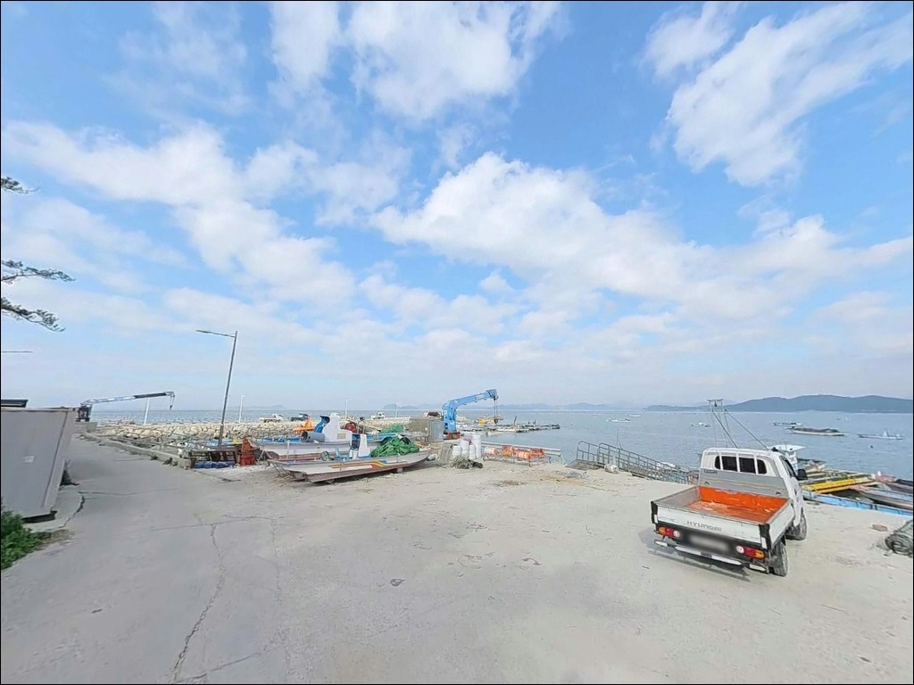
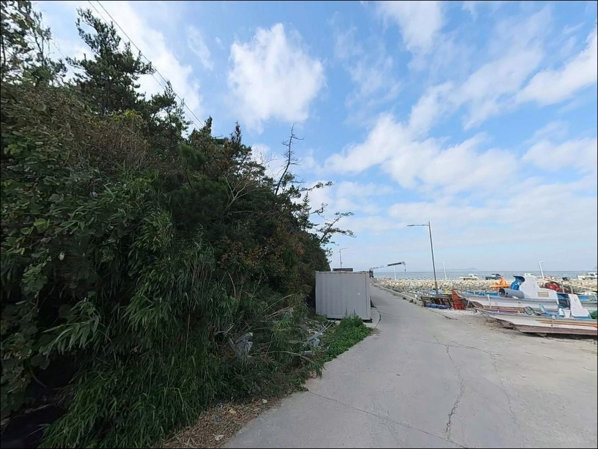
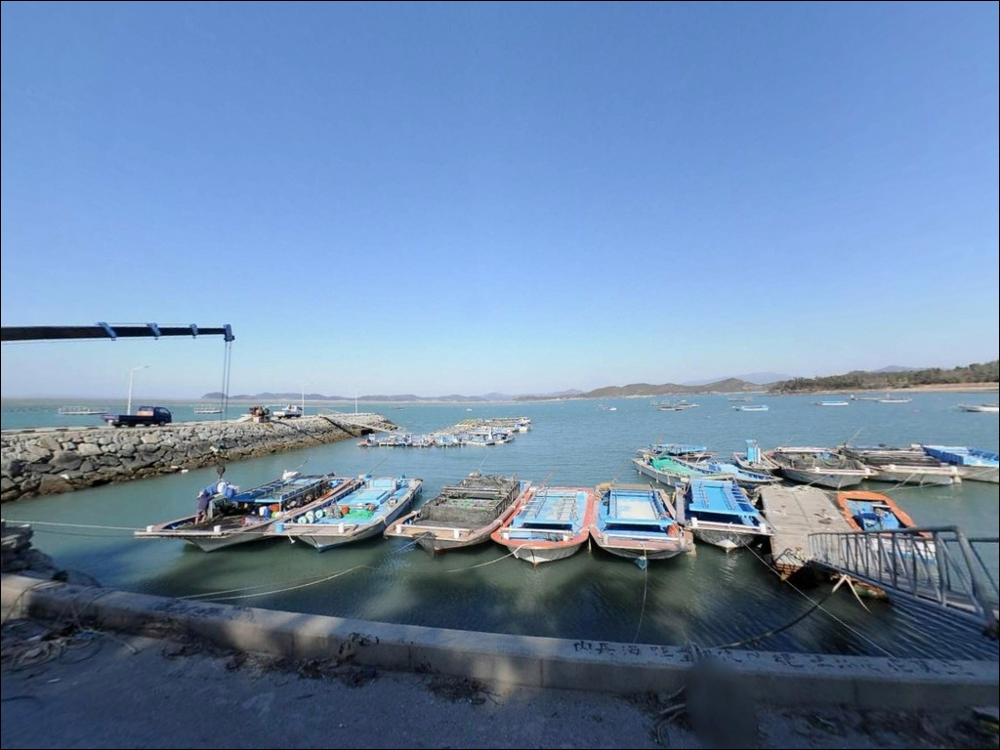
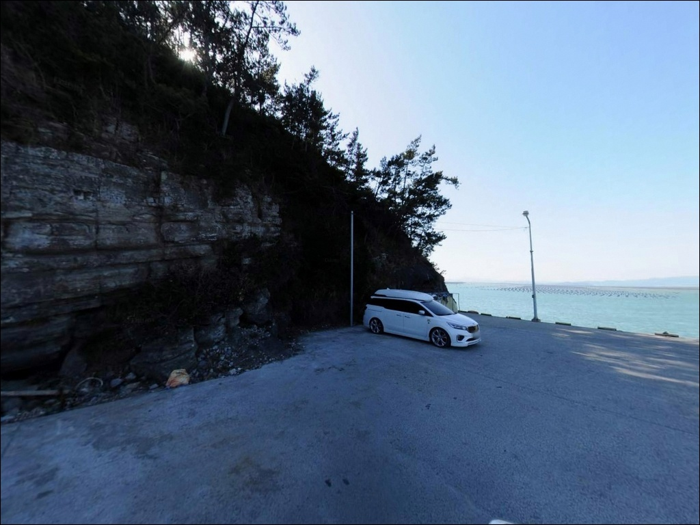
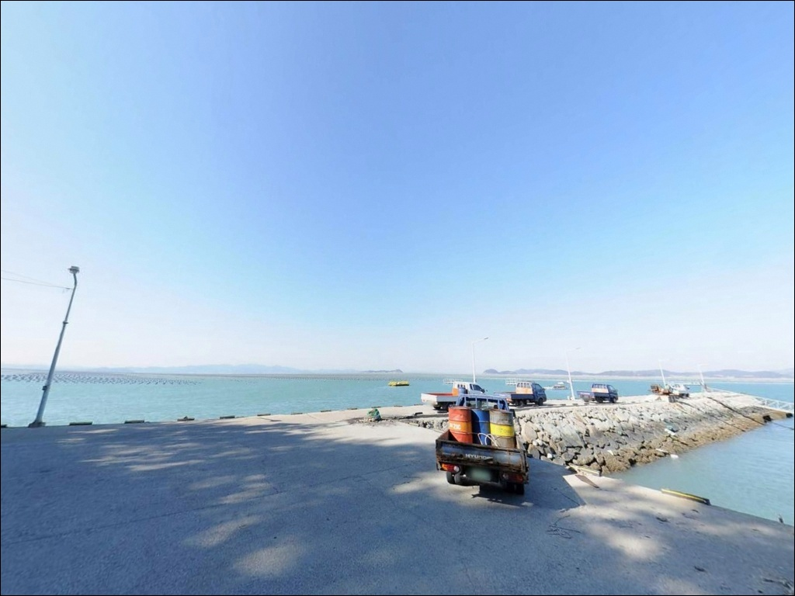
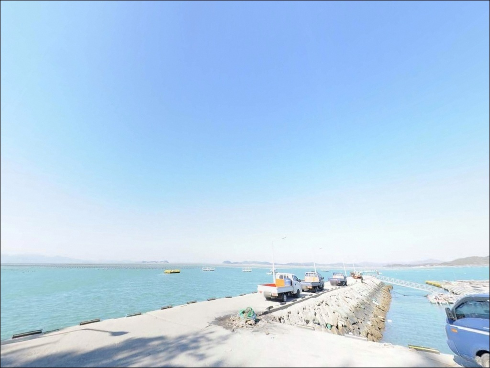
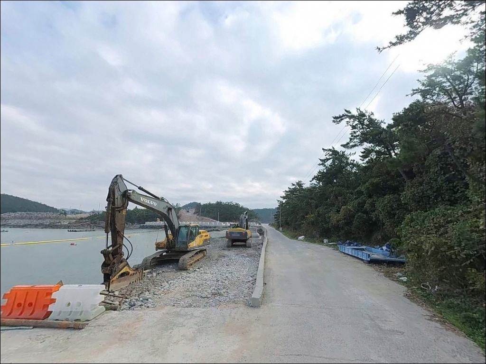

이 페이지에는 광고(제휴 링크 포함)가 있으며, 광고 링크를 통해 구매하면 운영자가 판매 수익 또는 수수료를 받을 수 있습니다. 포인트 사진: 카카오맵 스카이뷰·로드뷰. 이 페이지의 지도·사진 이미지는 카카오맵의 실제 서비스 이미지와 다를 수 있습니다.


어란리 선착장, 전남 해남군 노을빛이 스며드는 차박, 낚시 겸용 감성 장소
포인트 안내
어란진항 내장리방파제
전남 해남군 송지면 어란리 772-5
어란진항 내장리방파제에서 썰물 타이밍에
원투 채비를 던지면,
봉돌이 바닥에 안착되기 전에
조류에 흘러가버리는 상황이 만들어집니다.
어불도가 외해를 막아 내만처럼 조용해 보이지만,
수로 방향 썰물 조류는
생각보다 세게 들어오는 구간이 있습니다.
이 글은 내장리방파제의 진입 동선과
서방파제 지형 구조, 물때 판단 기준,
낚시 스타일별 공략 조건에 집중합니다.
조황 단정이나 특정 어종 보장은
이 글의 범위에 포함되지 않습니다.

1. 진입 동선과 포인트 접근성
어란진항은 1971년 국가어항으로 지정된 곳으로,
마을 끝 도로에서 항구까지
포장된 진입로가 연결되어 있습니다.
다만 어란리가 산지 비율이 높은
반도형 지형 안쪽에 위치하는 구조여서,
일부 구간은 도로 폭이 좁고
경사 구간이 포함된 마을도로 수준입니다.
대형 SUV나 캠핑 장비를 갖춘 차량이라면
출발 전 위성지도로 진입로를 확인하는 것이 좋습니다.
항구 내 주차장이 있어
일반 차량의 회차는 비교적 용이한 편이지만,
민어 시즌 주말에는 자리 선점을 위해
낚시인이 일찍부터 몰리는 경향이 있어
입장 시각 조율이 필요합니다.
2025년부터 CLEAN 국가어항 조성사업이 착공되어
항내 일부 구역에서 공사가 진행 중입니다.
위판장 리모델링, 어민회관 신축,
스마트 광장 조성 등이 포함된 대규모 정비사업으로,
방문 전에 낚시 가능 구역 현황을 확인한 뒤
출조 계획을 세우는 것이 안전합니다.

2. 차박 환경과 야간 체류 여건
차박이란 차량을 숙박 공간으로 활용하며
낚시 현장에서 하룻밤 체류하는 여행 방식입니다.
어란진항은 주차장 공간이 넓어
차를 세우고 하룻밤 머무는 구조 자체는
나쁘지 않은 편입니다.
민가가 인접해 있어
완전한 프라이버시는 기대하기 어렵지만,
어촌 마을 특성상 야간에는 통행이 줄어드는 편입니다.
방파제 등대가 복수로 존재하는 구조라
야간 조명이 일부 확보되는 편이며,
외항 방향 낚시 자리는 어두운 구간이 있을 수 있어
헤드랜턴은 필수입니다.
어불도가 외해 파랑을 막아주는 구조라
바람과 파도 영향이 줄어드는 편이지만,
해남 남단 특성상 돌풍이 갑작스럽게 들어오는 경우가 있습니다.
공사가 진행 중인 기간에는
야간 차박 체류 가능 구역이 바뀔 수 있습니다.
항내 정비 공사 구역과 주차 가능 구역이
달라질 수 있으므로,
방문 전 확인을 거친 뒤
출조 계획을 세우는 편이 좋습니다.


3. 주변 편의시설 및 인프라 현황
어란리 자체는 소규모 어촌마을 규모로,
반경 3km 이내에서 확인된
편의점이나 마트 시설이 없습니다.
식수·얼음·낚시 소품은
출발 전에 완비하고 진입하는 것이
현실적인 준비 방식입니다.
반경 10km 권역에서는
송지면 소재지 방향으로 이동하면
편의점과 주유소를 이용할 수 있습니다.
응급 상황 발생 시 해남읍까지
차량으로 40분 이상 소요되므로,
비상약품과 충분한 수분 준비는
출발 전에 챙겨야 합니다.

4. 물때 판단이 낚시 성패를 가르는 이유
어란진항에서 가장 먼저 확인해야 할 것은
물때입니다.
어불도와 내장마을 사이 수로 방향으로
조류가 집중되는 구조여서,
썰물 시간대에는 봉돌이 바닥에 안착되지 않을 만큼
흐름이 강해지는 구간이 발생합니다.
바다타임에서 어란리 기준 물때를 확인하고,
정조 전후 또는 들물 타이밍을 노려
출발 시각을 맞추는 것이 기본 전략입니다.
썰물 시간대 어란진항 수로 구간은 조류가 강해져
봉돌 30호 이하로는 채비 컨트롤이 어렵습니다.
민어 원투낚시를 목적으로 찾는다면
6월 중순부터 8월 초 사이 여름 야간이
핵심 시즌입니다.
이 시기는 낚시인이 몰리는 만큼
자리 선점이 중요하므로
여유 있게 일찍 도착하는 편이 좋습니다.
방파제 낚시 시 구명조끼는 필수입니다.
국가어항 내 어선 통행 구역과
낚시 자리가 겹치지 않도록 자리를 잡는 것이
기본 매너이며,
야간에는 헤드랜턴과 반사형 안전 조끼도
함께 챙기는 편이 좋습니다.

5. 지형 기반 낚시 여건 분석
어란진항은 어불도가 항구 남서쪽에 위치하며
외해 파랑을 직접 막아주는 구조입니다.
이 덕분에 내항이 안정적이고
방파제 외항 쪽도 외해 직격보다는
완충된 수면 상태를 유지하는 편입니다.
다만 두 섬 사이 수로 방향으로
조류가 집중되는 구간이 있어,
썰물 타이밍에는 채비 컨트롤이 어려워집니다.
서방파제 기준 수심은 4~5m 수준이며,
방파제 끝단으로 갈수록
급심 구간이 형성되는 구조입니다.
바닥은 뻘 성격으로 바닥 어종이 주로 서식하는
지형 조건이며,
민어·감성돔·붕장어·수조기 등이
이 해역 만 구조에서 기대해볼 수 있는 어종입니다.
최신 조황은 출조 전에
어란진항 또는 내장리방파제 키워드로
검색해 보시기 바랍니다.
내장리방파제는 서방파제가 낚시 메인 자리로,
빨간등대와 하얀등대 방향으로
각기 다른 자리가 나뉘는 구조입니다.
외항 쪽은 수심과 조류 흐름이 살아있어
원투 채비가 힘을 발휘하는 구간이고,
내항 쪽은 잔잔한 수면을 활용한
찌낚시 자리로 성격이 다릅니다.
어불리승강장 뒤편 도보 갯바위 구간에서도
수심이 나오는 편이어서
탐색 범위를 넓혀볼 만한 구간입니다.
어불도가 외해 파랑을 막아주는 구조이지만,
물때 판단 없이 진입하면
원투낚시 포인트로서의 조건이 성립하지 않습니다.


6. 포인트에 어울리는 낚시 스타일
이 포인트의 대표 스타일은
서방파제 끝단에서 외항 방향으로 멀리 던지는
원투낚시입니다.
원투낚시란 무거운 봉돌을 달아
채비를 멀리 캐스팅한 뒤
바닥층 어종을 노리는 낚시 방식입니다.
조류가 강한 구간을 고려해
봉돌은 30호 이상을 준비하는 것이 기본이며,
민어 시즌인 여름 야간에
바닥 탐색을 중심으로 공략하는 방식이
이 지형에 어울립니다.
붕장어와 수조기도 같은 조건에서
올라오는 어종으로 기대해볼 수 있습니다.
감성돔 찌낚시도 서방파제 끝단 외항 방향에서
전유동 또는 반유동 찌 채비로 공략하는
방식이 맞습니다.
조류가 느려지는 정조 타이밍을 맞추면
채비를 흘리기 좋은 조건이 만들어집니다.
어불리승강장 뒤편 갯바위 구간도
저부력 전유동 찌낚시 자리로
활용 가능합니다.
루어낚시는 내항 가까운 석축 구간에서
야간 농어와 볼락을 대상으로
접근해볼 만한 구조입니다.
소형 지그헤드 채비나 미노우 계열 루어로
천천히 탐색하는 방식이
이 포인트 내항 구조에 어울리는 편입니다.

7. 대안 포인트와 플랜 B 동선
어란진항 공사 상황이 여의치 않거나
자리 경쟁이 심할 때의
첫 번째 대안은 땅끝 갈두항입니다.
송지면 동일 해안선 최남단에 위치하며,
접근성이 좋고 낚시 인프라가 갖춰진 항구입니다.
감성돔과 원투낚시 스타일 모두
운용이 가능한 대안 포인트입니다.
진도 용호방파제는 어란리와 같은 권역에서
민어 원투낚시 포인트로 알려진 곳입니다.
온라인 조황 정보가 상대적으로 많아
출조 전 최신 상황 파악이 더 수월한 편입니다.
민어 시즌에 어란진항이 여의치 않을 때
함께 비교해볼 만한 대안 포인트입니다.
차박 대안으로는 송호리 해수욕장 인근이 있습니다.
해송 숲과 백사장이 맞닿는 구조로
공간 여유가 있는 편이며,
낚시와 차박을 동시에 계획할 때
대안 기점으로 활용 가능합니다.

어란진항이 맞는 낚시인,
한 가지 조건부터 확인하십시오
여름 야간 민어 원투낚시를 즐기는 낚시인이라면
어란진항 내장리방파제의 지형 조건이
잘 맞는 구조입니다.
어불도가 만들어주는 안정된 수면과
서방파제 끝단의 급심 구간은
원투 채비가 제 역할을 할 수 있는 환경입니다.
감성돔 찌낚시와 야간 루어낚시까지
복수 스타일로 운용이 가능한 곳이기도 합니다.
단 물때 확인 없이 썰물 타이밍에 진입하거나,
공사 구역 파악 없이 현장에 도착하면
낚시 자체가 어려워지는 상황을
맞닥뜨릴 수 있습니다.
물때 확인, 공사 현황 파악, 자급 준비
이 세 가지를 갖추고 간다면
어불도 내만에서 야간 원투대를 드리우고
차박으로 하룻밤 보내는
기억에 남는 출조가 될 수 있는 포인트입니다.